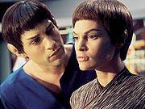
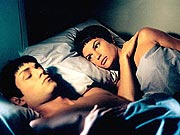
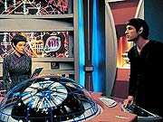
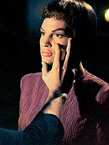
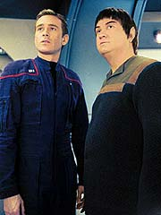
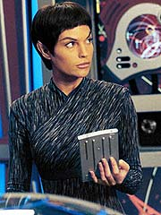

Episdio
anterior | Prximo
episdio
Sinopse:
Archer est com T'Pol em seu
gabinete, segurando um livro infantil. A capa mostra a imagem de
uma nebulosa azul --a mesma que aparece no monitor do capito.
T'Pol abre o livro onde vemos que o jovem Archer, de oito anos,
escreveu seu nome: "Do almirante Jonny Archer".
O painel de comunicao apita e ouvimos a voz de Reed informando
ao capito que h uma nave se aproximando e que eles esto
chamando. A nave acaba se revelando uma nave de transporte Vulcana,
mas a classe da nave no usada h muitos anos, segundo T'Pol.
A Enterprise responde ao chamado, e um Vulcano chamado Tavin
aparece na tela. Ele diferente dos outros Vulcanos, seu cabelo
muito mais comprido, e suas roupas so mais casuais e ele
incomumente amigvel. Tavin exclama: " muito bom ver vocs".

A nave Vulcana se
revela uma nave civil em uma misso de explorao. Tavin diz a
Archer que eles no so Vulcanos tpicos. Ele pede assistncia
nos reparos de sua nave, e Archer concorda. T'Pol est intrigada
pelo encontro e desconfiada, ela no gosta do que est
acontecendo.
Os Vulcanos so convidados a bordo da Enterprise, onde Archer e
T'Pol compartilham uma refeio com Tavin e um de seus colegas
de tripulao, Tolaris --um Vulcano silencioso e sinistro.
Naturalmente, uma refeio vegetariana preparada para os
Vulcanos. Eles entretanto manifestam mais interesse no frango que
o capito Archer est comendo.
Tavin revela que eles no esto explorando o espao, mas um
novo modo de vida. T'Pol percebe subitamente, chamando-os de
"V'tosh ka'tur", que significa "Vulcanos sem lgica".
Tavin diz que eles no deixaram a lgica para trs, mas
simplesmente encontraram um equilbrio entre razo e emoo.
Ele explica que uma das razes pelos quais eles deixaram seu povo
porque eles tm o hbito de ficar de olho em outras espcies
ou em qualquer um que discorde deles. H oito anos no espao,
mas seu experimento parece ter funcionado.
T'Pol est incomodada com a presena desses Vulcanos, mas Archer
a estimula a acompanhar mais de perto seus colegas --talvez alguns
de seus ensinamentos sejam vlidos afinal. A primeiro oficial
relutantemente concorda, e encontra Tolaris no refeitrio. Ele
percebe que as emoes de T'Pol esto muito mais perto da
superfcie do que o Vulcano mdio. Segundo T'Pol, a histria
mostrou que os Vulcanos que abraam suas emoes costumam
reverter a sua natureza primal, e alguns at se tornam
mentalmente instveis. Tolaris no concorda.

Os
reparos continuam na nave Vulcana, e o engenheiro Vulcano Kov
acaba ficando amigo de Tucker. Os dois passam um bom tempo juntos,
onde contam mais um ao outro sobre suas culturas. Trip revela que
os humanos no so to brbaros, e que futebol americano
apenas um jogo, no um tipo de combate mortal. Kov, por sua vez,
revela detalhes dos costumes reprodutivos Vulcanos.
Enquanto isso, a Enterprise segue explorando a nebulosa. Na ponte,
Reed informa Archer de que h bolsos de turbulncia e variaes
gravimtricas frente. A Enterprise entra na nebulosa com a
nave Vulcana atracada na sua lateral. Tavin explica a Archer que
os sensores de navegao a bordo da nave Vulcana so bem
sofisticados, e ento Archer manda T'Pol a bordo para reconfigur-los,
para tomar leituras da nebulosa, o que vai ajudar a Enterprise a
completar a tarefa em muito menos tempo.
A bordo da nave Vulcana, chamada Vaklis, T'Pol fica curiosa ao ver
uma pequena esttua de Surak, depois de eles terem rejeitado seus
ensinamentos. Tolaris diz a ela que eles no rejeitaram seus
ensinamentos, mas discordam de como os antigos os interpretam.
T'Pol admite que medita toda noite e Tolaris pede a ela que no
medite desta vez para ver o que acontece. Ela decide seguir seu
conselho.
A Vulcana tem um sonho estranho, em que revive algo que havia
feito anos atrs em San Francisco. Ela secretamente havia deixado
o complexo Vulcano e ido at um bar, atrada pelo jazz que
tocavam l dentro. Sua sequncia de sonhos se mistura a cenas em
que ela aparece tendo uma relao sexual com Tolaris. Ela acorda
perturbada e vai enfermaria. Phlox d a ela um medicamento que
ajude a combater os sintomas de perturbao que ela est
sentindo aps a experincia.

Na Enterprise,
Archer contatado pelo almirante Forrest, que passa adiante um
pedido do Alto Comando Vulcano. Eles querem que o capito pea
ao Vulcano Kov que contate seu pai, que est beira da morte.
Archer tenta convencer Kov a contatar Vulcano, mas o engenheiro se
recusa, dizendo que j disse adeus a seu pai, que o teria
rejeitado anos atrs, h muito tempo. Archer pede ento a Trip,
que se tornou amigo de Kov, que tente convenc-lo. Os dois tambm
conversam sobre a amizade de T'Pol com Tolaris. O capito mesmo
havia incentivado sua primeiro-oficial a conhecer os visitantes,
mas agora est incomodado com a proximidade dos dois. Tucker
chega at a dizer que, se no o conhecesse, diria que ele est
com cimes.
No refeitrio, vemos T'Pol contando a Tolaris sobre sua experincia
aps no ter meditado na noite anterior. O Vulcano acredita que
pode mostrar a T'Pol como canalizar seu sentimentos quando eles
chegam. De volta a seus aposentos, Tolaris mostra a T'Pol como
experimentar ansiedade, entre outras coisas. Ele diz a ela que o
elo de mentes Vulcano, que ele descreve como uma antiga tcnica
mental abandonada h sculos, no to perigoso quanto lhes
ensinado, e que uma experincia bem libertadora. T'Pol
acaba concordando em realizar um teste.
Tolaris ento se une a T'Pol. Aos poucos, a Vulcana comea a se
sentir violentada pela agressividade do contato mental de Tolaris
e pede para parar. Ele fica impassvel. T'Pol pede que ele saia,
mas ele agarra seu brao trazendo-a para perto. T'Pol ento se
liberta e o atira para o outro lado da sala. Tolaris ento d a
T'Pol um frio olhar e sai da sala. T'Pol est abaladssima, e se
arrasta at a mesa para contatar a enfermaria.
Enquanto isso, Trip est tentando convencer Kov a ligar para seu
pai. A princpio, o Vulcano declina novamente, mas acaba
concordando que o melhor a fazer. No gabinete de Archer, o
capito convoca Tolaris. Em princpio ele se apresenta amistoso,
mas depois parte para cima do Vulcano, questionando sobre o que
ele fez a T'Pol, que est na enfermaria com possvel dano neurolgico.
Tolaris se torna agressivo e atira o capito, que rapidamente
saca uma pistola de fase e coloca o Vulcano para fora.
Enquanto os Vulcanos partem, T'Pol est se recuperando em seus
aposentos. Archer vai visit-la e diz que agora entende o porqu
de os Vulcanos terem suprimidos suas emoes. Em contrapartida,
T'Pol admite sentir inveja do capito por ter sonhos agradveis
a maior parte do tempo, sem precisar de meditao antes de
dormir.
Comentrios:
Eu no costumo ter estmago sensvel a falhas de
continuidade, mas "Fusion" apresenta problemas. No
pela srie em si, e sim pelo que precisamos desconsiderar em
termos de histria pregressa de Jornada nas Estrelas para
engolir o contedo que nos apresentado.

Que h
Vulcanos rebeldes, que no aceitam a tradio da supresso das
emoes, ns j sabemos --e o episdio respeita isso. Que
esses Vulcanos no costumam ficar muito tempo em seu mundo natal
e no so aceitos por seus pares, tambm j sabemos. As duas
informaes vm da pior fonte possvel, "Jornada nas
Estrelas V: A ltima Fronteira", mas so cannicas,
temos de aceitar.
Agora, um absurdo retratar o elo de mentes --j praticado em
tela vrias vezes at por Vulcanos inquestionavelmente
conservadores, como o embaixador Sarek-- uma tcnica antiga
abandonada h sculos. Se o elo de mentes fosse um tabu to
grande em Vulcano, seria difcil de imaginar que em apenas um sculo
ele subiria as escadas do hit-parade para se tornar uma marca
registrada da espcie.
Ademais, muitas outras tradies da cultura Vulcana esto
ligadas a contatos telepticos, como o prprio casamento
arranjado, que T'Pol revelou (em "Breaking
the Ice") ter participado. E quanto tcnica que a
Vulcana aplica em Hoshi para acalm-la em "Sleeping
Dogs"? Se aquilo no foi um parente do elo de
mentes, no sei dizer o que foi...

Como se no
fosse suficiente essa baguna com o elo mental Vulcano, esses
rebeldes falam abertamente de seu ciclo sexual de sete anos. No
que eles devessem estar presos pelas mesmas amarras de seus amigos
no-emotivos, que jamais falariam disso, mas difcil explicar
que um conhecimento adquirido h cem anos por humanos sobre os
costumes de seu principal aliado na Federao seja totalmente
desconhecido por Kirk, quando seu amigo Spock entra no Pon Farr.
Mais que isso, McCoy, na condio de mdico, certamente deveria
saber algo a respeito. Entretanto, em "Amok Time",
nenhum dos dois sabia de nada disso.
No adianta nada ficar colocando citaes engraadinhas de
nomes que apareceram nas outras sries de Jornada, se as
histrias em si no obedecem a uma lgica cronolgica. Entre
forma e contedo, fico com o ltimo todas as vezes. E o que
apresentado em "Fusion" a respeito dos Vulcanos no
faz o menor sentido, na maior parte do tempo.
H entretanto alguns detalhes interessantes. curioso, por
exemplo, que haja mltiplas interpretaes para os ensinamentos
de Surak. Isso mostra que o pensador e pai do modo de vida Vulcano
no to maniquesta quanto parecia ser. D certos tons de
cinza cultura e aos costumes Vulcanos aps a "Iluminao"
que certamente caem bem.
Tudo isso acima mostra os problemas e acertos que o episdio tem
com relao ao conjunto da obra de Jornada --fator que se
torna preponderante em episdios como este, que pretendem versar
sobre uma das espcies mais conhecidas do franchise. Olhando de
outro ponto de vista, considerando apenas o histrico de
Enterprise, "Fusion" cai at bem.
Operando em seus prprios termos, o episdio consegue apresentar
um enredo de forte potencial para o desenvolvimento de T'Pol.
Jolene Blalock no desaponta e traz possivelmente sua melhor atuao
em toda a temporada. Suas cenas com Enrique Murciano (Tolaris) so
especialmente poderosas, e conseguem deixar o telespectador
interessado, apesar dos clichs e do bvio desenrolar da histria.

A relao
de Trip com Kov igualmente cativante, e igualmente previsvel.
Na verdade, s h uma coisa que surpreende: Archer finalmente
mostra com propriedade por que o capito da Enterprise. Sua
confrontao com Tolaris sensacional, e Bakula consegue
recuperar aqui o tom cido e dinmico que s deu o ar da graa
antes em "Broken Bow"
--onde o capito tambm confrontava Vulcanos pouco amistosos.
Em termos de contexto da srie, o episdio claramente tem duas
funes. Mostrar aos humanos que h um boa razo para os
Vulcanos serem o que so, lgicos e disciplinados, e mostrar a
T'Pol que ter emoes, contanto que elas estejam sob controle,
pode ser algo extremamente positivo. As duas concluses so
exatamente o que levar humanos e Vulcanos a um entendimento para
a fundao da Federao, e so, portanto, temas centrais da srie.
Pena que eles sejam atirados aqui de forma to bvia. Sutileza
s vezes cairia bem.
Do ponto de vista tcnico, "Fusion" apresenta
algumas inovaes interessantes, mais na parte sonora do que
visual, proporcionadas pelo sonho de T'Pol e pelo elo mental com
Tolaris. Tambm contradiz o tom da srie em termos de ritmo,
mostrando-se um episdio muito mais lento do que a mdia de Enterprise.
Por fim, o tom mais sexual d outro diferencial, mas no chega
nem perto de ser ofensivo ou agressivo demais para a audincia da
srie. No realmente inovador para quem j viu "The
Price" ou "Sub Rosa" (ambos da Nova
Gerao).
No fim, entretanto, tudo se resume a mais um episdio que
filmado quase 100% dentro da Enterprise, o que certamente garantiu
mais economia aos produtores. As tomadas externas da Enterprise e
da nave Vulcana so espetaculares, mas no servem a nenhum propsito
exceto o de fazer transies entre cenas. De resto, um episdio
dramaticamente desafiador para os atores convidados e Blalock, mas
pouco enriquecedor no contexto do background sobre os Vulcanos.
Mais complica que explica.
T'Pol saiu ganhando, mas no havia um meio menos bagunado de
produzir essa histria, sem chutar o balde da continuidade? Sybok
explica...
Citaes:
T'Pol - "Just
because they smile and eat chicken, it doesn't mean they've
learned to master their emotions."
("S porque eles riem e comem frango, no quer dizer que
aprenderam a dominar suas emoes.")
Tucker - "They're not trying to kill the quarterback!"
("Eles no esto tentando matar o quarterback!")
Tucker - "If I didn't know better, I'd say you were a
little jealous."
("Se eu no te conhecesse melhor, diria que est com cimes.")
Tucker - "Regret is one of the strongest emotions --and
one of the saddest."
("Arrependimento uma das emoes mais fortes --e uma das
mais tristes.")
Archer - "I think I finally understand why."
("Eu acho que finalmente entendo por qu.")
Trivia:
 Este episdio tinha como nome original "Equilibrium". O
nome foi trocado porque era o mesmo de um episdio do terceiro
ano de Deep Space Nine. Antes de "Equilibrium", a
histria era chamada pelos produtores de "Untitled T'Pol
Seduction" (Seduo de T'Pol Sem Ttulo).
Este episdio tinha como nome original "Equilibrium". O
nome foi trocado porque era o mesmo de um episdio do terceiro
ano de Deep Space Nine. Antes de "Equilibrium", a
histria era chamada pelos produtores de "Untitled T'Pol
Seduction" (Seduo de T'Pol Sem Ttulo).
As primeiras verses do roteiro eram muito mais sexuais do que o
que foi filmado. T'Pol apareceria tomando um banho de cachoeira e
Tolaris foraria a Vulcana a participar do elo de mentes.
Phyllis Strong e Mike Sussman so grandes fs de Jornada,
pelo que se v de seus roteiros. Aqui eles inserem uma referncia
Academia de ShiKahr, cidade mencionada em "Yesteryear",
da Srie Animada, como sendo a capital Vulcana. Alm
disso, as primeiras verses do roteiro continham tambm uma meno
do Monte Seleya, visto em "Jornada nas Estrelas III:
Procura de Spock".
John Billingsley chegou a comentar o episdio em uma entrevista.
"Temos um episdio vindo a em que... eu no diria um
bando de Vulcanos renegados, mas um grupo separatista que acredita
que possvel ser mais disponvel s emoes do que a
maioria dos Vulcanos chega a bordo e ento tenta convencer
T'Pol de seu modo de pensar, com resultados calamitosos."
"Temos um episdio vindo a em que T'Pol fica indecente com
um Vulcano. E um show realmente sexy", disse Brannon Braga
sobre este episdio. "Vamos encontrar alguns Vulcanos que
esto tentando colocar emoes em suas vidas. E T'Pol vai se
emaranhar em uma histria de seduo, como um 'Nove Semanas e
Meia de Amor' Vulcano."
Dos trs personagens Vulcanos criados para este episdio, apenas
Kov permaneceu com o mesmo nome do incio ao fim. Tolaris, nos
primeiros roteiros, se chamava Szon, e Tavin se chamava Tyrus.
Robert Pine j fez uma apario anterior em Jornada,
como o embaixador Liria em "The
Chute", de Voyager.
Vaughn Armstrong, com sua coleo de papis aliengenas em Jornada
nas Estrelas, faz sua quarta apario como almirante Forrest,
e a quinta na srie (contando sua ponta como o capito Klingon
de "Sleeping Dogs").
Ficha
tcnica:
Histria de Rick Berman
& Brannon Braga
Roteiro de Phyllis Strong & Mike Sussman
Direo de Rob Hedden
Exibido em 27/02/2002
Produo: 017